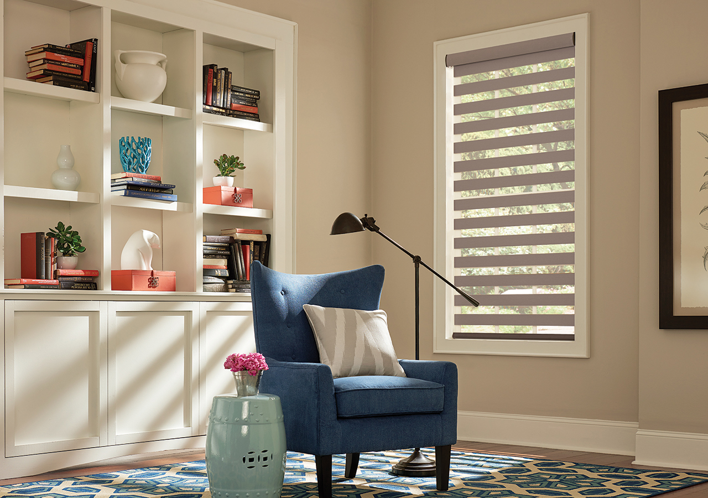

<!DOCTYPE html>
<!--
Licensed to the Apache Software Foundation (ASF) under one
or more contributor license agreements.  See the NOTICE file
distributed with this work for additional information
regarding copyright ownership.  The ASF licenses this file
to you under the Apache License, Version 2.0 (the
"License"); you may not use this file except in compliance
with the License.  You may obtain a copy of the License at
http://www.apache.org/licenses/LICENSE-2.0
Unless required by applicable law or agreed to in writing,
software distributed under the License is distributed on an
"AS IS" BASIS, WITHOUT WARRANTIES OR CONDITIONS OF ANY
KIND, either express or implied.  See the License for the
specific language governing permissions and limitations
under the License.
-->
<html lang="en">
    <head>
        <!--
        Customize this policy to fit your own app's needs. For more guidance, see:
        https://github.com/apache/cordova-plugin-whitelist/blob/master/README.md#content-security-policy
        Some notes:
        * gap: is required only on iOS (when using UIWebView) and is needed for JS->native communication
        * https://ssl.gstatic.com is required only on Android and is needed for TalkBack to function properly
        * Disables use of inline scripts in order to mitigate risk of XSS vulnerabilities. To change this:
        * Enable inline JS: add 'unsafe-inline' to default-src
        -->
        <meta charset="utf-8">
        <meta name="viewport" content="viewport-fit=cover, initial-scale=1, maximum-scale=1.5, minimum-scale=1, width=device-width">
        <meta http-equiv="Content-Security-Policy" content="default-src *; style-src 'self' 'unsafe-inline'; script-src * 'unsafe-inline' 'unsafe-eval'; img-src *; media-src *">
        <meta name="format-detection" content="telephone=no">
        <meta name="msapplication-tap-highlight" content="no">
        <meta name="description" content="Product Catalog section of Graber Blinds - Sheer and Layered Shades Sample Book.">
        <title>Product Catalog - Sheer and Layered Shades Sample Book | Graber Blinds | Middleton, WI</title>
        <link rel="stylesheet" type="text/css" href="../css/style.css">
        <link rel="stylesheet" type="text/css" href="../css/product-catalog.css">
    </head>
    <body id="product-catalog-9">
        <div class="app">
            <div class="navbar">
                <ul class="navbar-list list-inline">
                    <li class="navbar-list-item nav-left"><a class="nav-link back" href="product-catalog-8.html" title="Go back"><span class="small-screen-hide">Back</span></a></li>
                    <li class="navbar-list-item title">Safety</li>
                    <li class="navbar-list-item nav-right"><!--<a class="next" href="#" title="Go to next page"><span class="small-screen-hide">Next</span></a>--></li>
                </ul>
            </div>
            <section class="content pc-9">
                <div class="inner-content scrolling-container">
                    <section class="action-section">
                        <div class="action-inner-section">
                            <div class="img-container">
                                <!--<a href="../assets/images/roomscene-9-2.jpg" data-lightbox="room-scene-gallery" data-title="Layered Shades with Motorized Lift: Venado, Dusky Mauve 4644">--><!--</a>-->
                            </div>
                            <div class="vertical-bar"></div>
                            <div class="horizontal-bar"></div>
                            <article class="action-container">
                                <div class="action-heading-container">
                                    <h1>Your Safety</h1>
                                    <span class="action-subhead">is Our Highest Priority</span>
                                </div>
                            </article>
                        </div>
                    </section>
                    <section class="caption-section">
                        <p>Layered Shades with Motorized Lift: Venado, Dusky Mauve 4644</p>
                    </section>
                    <section class="info-section">
                        <article class="info-container">
                            <div class="info-heading-container">
                                <h2>Your Safety is Our Highest Priority</h2>
                            </div>
                            <div class="info-content-container">
                                <p>You have high standards for the products you use to decorate your home. You want them to be strong and durable, of exceptional quality, and as beautiful as they are functional in design.</p>
                                <p>You also have high standards for the companies who make those products. That’s why Graber is working constantly to improve processes, maximize product benefits, and above all, ensure your safety.</p>
                                <p>When child-proofing your home it is important to remember that cords on traditional window blinds and shades pose a strangulation hazard, and can cause accidents or injuries to babies and toddlers.</p>
                                <p>Cordless lift and motorized lift options are both safe alternatives– eliminating the standard cord that could entangle children or pets. For more information on child-safe window treatments review the guidelines below, or talk with your Graber Design Consultant.</p>
                                <h4>Important Cord Safety Guidelines</h4>
                                <p>The Window Covering Safety Council urges parents and caregivers to check for potential window cord hazards and make the necessary safety updates.</p>
                                <ul>
                                    <li>Install only cordless window coverings in young children’s playrooms and sleeping areas.</li>
                                    <li>Replace or retrofit window blinds, corded shades and draperies manufactured before 2001 with today’s safer products.</li>
                                    <li>Move all cribs, beds, furniture and toys away from windows and window cords, preferably to another wall.</li>
                                    <li>Keep all window pull cords and inner lift cords out of children’s reach. Make sure that tasseled pull cords are short and continuous-loop cords are permanently anchored to the floor or wall. Cord stops should be properly installed and adjusted.</li>
                                    <li>Lock cords into position whenever horizontal blinds or shades are lowered.</li>
                                </ul>
                            </div>
                            <div class="image-caption-container text-center">
                                
                                
                            </div>
                        </article>
                    </section>
                    <section class="more-info-container">
                        <p class="more-info-box">For more information, contact the Window Coverings Safety Council at windowcoverings.org or 1-800-506-4636. You can also find a list of Graber products that are safer alternatives for children and pets at graberblinds.com.</p>
                    </section>
                </div>
            </section>
            <div class="tabbar">
                <ul class="tabbar-list list-inline">
                    <li class="tabbar-list-item"><a class="nav-link text-center" href="../index.html"><br>Home</a></li>
                    <li class="tabbar-list-item"><a class="nav-link text-center" href="../product-catalog.html"><br>Catalog</a></li>
                    <li class="tabbar-list-item"><a class="nav-link text-center" href="../collections.html"><br>Collections</a></li>
                    <li class="tabbar-list-item"><a class="nav-link text-center" href="../media.html"><br>Media</a></li>
                </ul>
            </div>
        </div>
        <script type="text/javascript" src="../cordova.js"></script>
        <script type="text/javascript" src="../js/jquery.min.js"></script>
        <script type="text/javascript" src="../js/fastclick.js"></script>
        <script type="text/javascript" src="../js/index.js"></script>
    </body>
</html>
